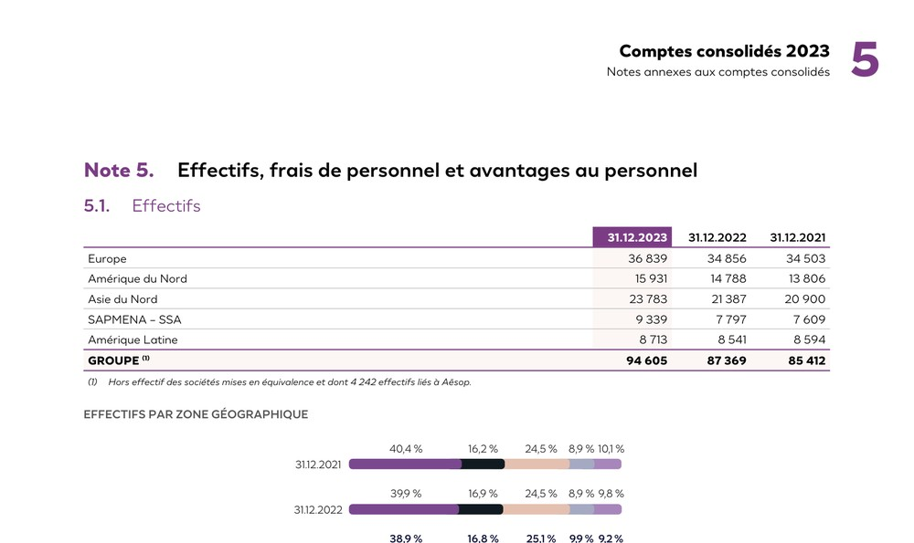

Motivation
Hybrid vision–text RAG over visually rich PDFs has two retrieval streams — page images and parsed markdown — both feeding a multimodal generator. The parser that produces the markdown is usually treated as interchangeable preprocessing.
It is not. Parsers differ by design goal, and that design goal propagates all the way to end-to-end answer accuracy.
Research question
Does swapping the parser — NeMo Retriever extraction vs DeepSeek-OCR-2 — change end-to-end answer accuracy in the hybrid setting, and is the direction of the change the one that retrieval metrics would predict?
Controlled comparison
Variable: parser choice.
Fixed: Jina v4 text retriever · ColEmbed visual retriever · zerank-2 reranker · qwen3.5:35b generator · llama3.1:8b judge · English generation prompt · top-k = 5 per stream · MAX_CHARS_PER_DOC = 4000.
The two parsers
NeMo Retriever extraction (nv-ingest)
- Backbone
- Nemotron-Parse VLM — layout-aware extraction with bounding-box grounding
- Design goal
- Fast retrieval preprocessing at scale (NVIDIA)
- Output
- Compact markdown; tables as markdown tables; figures dropped (no placeholder); text inside diagrams flattened via inline OCR (often garbled for equations)
- Used in
- ViDoRe v3 benchmark as the default text extractor
DeepSeek-OCR-2
- Backbone
- DeepEncoder V2 with dynamic visual token reordering + vision-token compression
- Design goal
- Faithful, compressed text-image reconstruction ("contexts optical compression")
- Output
- Verbose, structure-preserving markdown; LaTeX-rendered equations; figures inserted as
placeholders with crops saved to disk - Trained on
- Large-scale document OCR with emphasis on layout fidelity and long-context retention

Output on the same page

| Note 5. Effectifs, frais ... | | | | | 5.1. Effectifs | | | 31.12.2021 | | | 31.12.2023 | 31.12.2022 | | | Europe | 36 839 | 34 856 | 34 503 | | Amérique du Nord | 15 931 | 14 788 | 13 806 | | Asie du Nord | 23 783 | 21 387 | 20 900 | | SAPMENA SSA | 9 339 | 7797 | 7609 | | Amérique Latine | 8 713 | 8 541 | 8 594 | | GROUPE (1) | 94 605 | 87 369 | 85 412 |
## Note 5. Effectifs, frais de
personnel et avantages au personnel
## 5.1. Effectifs
<table>
<tr><td></td><td>31.12.2023</td>
<td>31.12.2022</td>
<td>31.12.2021</td></tr>
<tr><td>Europe</td>
<td>36 839</td>
<td>34 856</td>
<td>34 503</td></tr>
...
<tr><td>GROUPE \({}^{(1)}\)</td>
<td>94 605</td>
<td>87 369</td>
<td>85 412</td></tr>
</table>
Method
Results
Text retrieval — NeMo consistently wins
| Subset | NeMo | DeepSeek |
|---|---|---|
| computer_science (EN) | 83.0 | 82.4 |
| finance_en (EN) | 72.7 | 65.7 |
| pharmaceuticals (EN) | 69.5 | 65.1 |
| physics (FR) | 49.1 | 46.6 |
| finance_fr (FR) | 53.8 | 48.1 |
| avg | 65.6 | 61.6 |
DeepSeek's more verbose output dilutes the embedding signal — a known tension from the midway report.
Hybrid end-to-end — DeepSeek flips the direction
| Subset | NeMo | DeepSeek |
|---|---|---|
| computer_science (EN) | 93.0 | 95.3 |
| finance_en (EN) | 79.9 | 81.6 |
| pharmaceuticals (EN) | 87.9 | 89.3 |
| physics (FR) | 86.8 | 89.7 |
| finance_fr (FR) | 77.8 | 77.2 |
| avg | 85.1 | 86.6 |
DeepSeek-OCR-2 wins 4 / 5 subsets in hybrid generation, averaging +1.5 pts. The direction is opposite to what NDCG@10 predicts: the parser that loses retrieval wins end-to-end.
Why the reversal?
① Compactness wins retrieval
Jina v4 + zerank-2 score pages by a single dense cosine (then cross-encoder) similarity. NeMo's compact markdown produces tighter embeddings whose centroid stays near the query's topical anchor. DeepSeek's verbose, faithful markdown spreads the document's meaning across more tokens → the embedding drifts → the right page ranks lower.
② Faithfulness wins generation
Once a page is retrieved, the generator consumes the raw markdown alongside the page image. DeepSeek's preservation of layout, LaTeX, tables and structure gives the generator a richer textual anchor that complements the image. NeMo's flattened text sometimes drops the token the answer needs.
③ The finance_fr exception
- Queries are numeric / tabular facts ("revenue of LVMH in 2023") that NeMo's table extraction already captures in full — DeepSeek's extra faithfulness has nothing to add.
- ColEmbed's visual retrieval is weak on this corpus (NDCG@10 47.6, vs 71.3 English avg). When the visual stream is noisy, the hybrid advantage from parser quality disappears.
Conclusions
- Parser choice matters — even holding every other component fixed, the end-to-end delta is systematic across 4 of 5 subsets and averages +1.5 pts.
- Retrieval metrics are a misleading proxy for end-to-end parser selection. NeMo wins NDCG@10 by +4.1 pts on average and still loses hybrid pass@1 by −1.5 pts.
- The benefit is corpus-dependent: it needs a strong enough visual retriever to pair with the text. On corpora where visual retrieval is poor, the parser's downstream advantage collapses.
Future work
- Per-query-type analysis: where does DeepSeek's faithfulness help — tables? equations? figure captions?
- Figure captioning to close DeepSeek's placeholder-for-figures blind spot in the text stream.
- Statistical significance testing with paired bootstrap; the +1.5 pts averaged across 5 subsets is consistent in direction but within per-subset noise.
- Extension to more parsers (Marker, Docling, GOT-OCR) under the same controlled protocol.